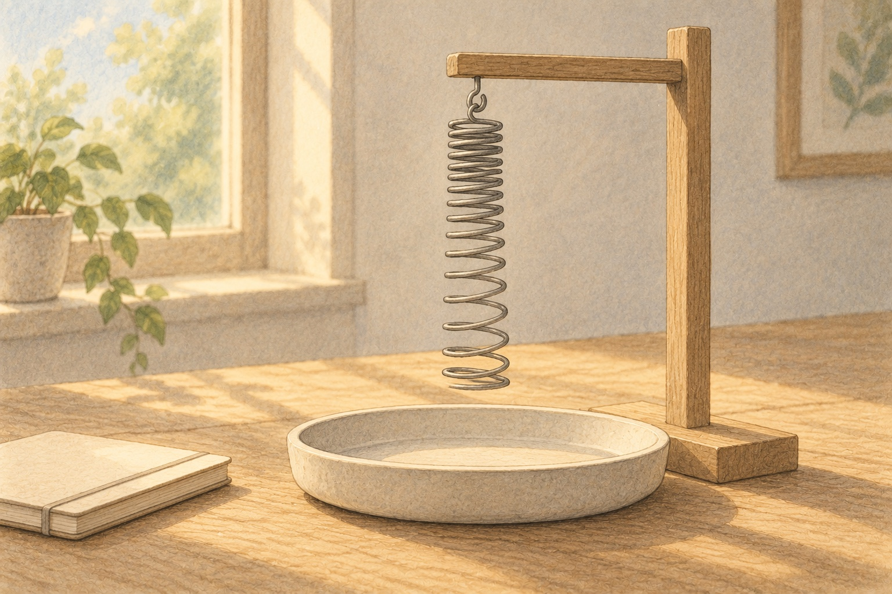
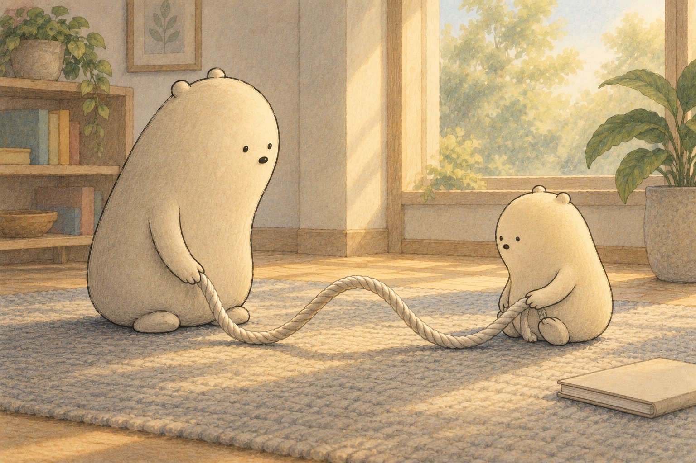

WONDER DAILY GRADE 3 · WRITING
Give a wiggle its words
Why Electronics Use Sine Waves · Curiosity day
Name __________________________ Date _______________
Say one clear command, then draw or write it.


Draw a swing, a spring, or a rope. Show which way it moves.
sine wave · wiggle · swing · spring · smooth · gently · back · forth
Swing … tell how to move gently
Watch … tell what to notice about a bounce
Draw … describe the smooth wiggle
Does your command tell what to do, using a word such as Swing, Watch, or Draw?